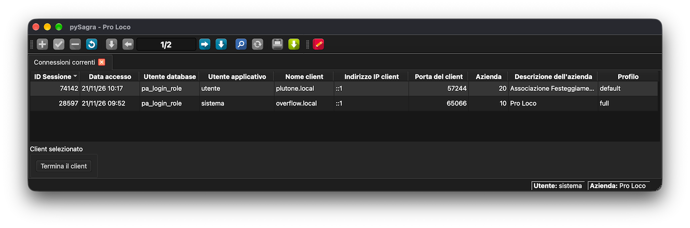
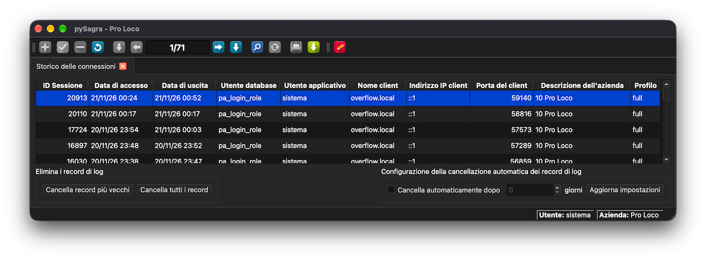

In questa scheda vengono visualizzati gli utenti attualmente collegati: chi, da quale computer, da quando, in quale azienda e con quale profilo.

Il tasto Termina il client chiude, dopo conferma, la connessione selezionata, per forzare l'uscita di un utente. La propria connessione non si può chiudere. Le connessioni orfane ovvero record che non fanno riferimento a connessioni attive, ad esempio perchè un PC è stato spento senza uscire dall'applicazione, vengono pulite ad ogni accesso di un nuovo client automaticamente.
Visualizza l'elenco degli accessi passati conclusi, ovvero con data di accesso e uscita valorizzate, con le stesse informazioni della lista precedente con in più la data e ora di uscita.

Per non far crescere troppo il numero di record sono previste queste funzioni:
Se viene attivata la cancellazione automatica l'operazione scatta ad ogni accesso di qualunque client e cancella i record con un numero di giorni tra la data attuale e la data di uscita maggiore di quello indicato.